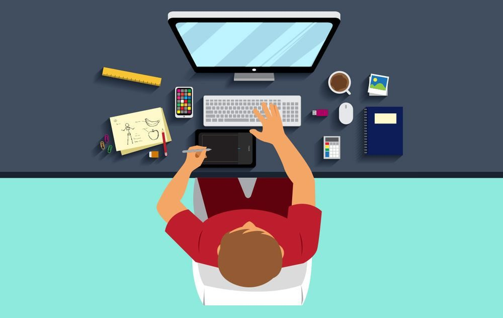

Short answer: Design is theory first, tools second — start with Canva Design School and CalArts fundamentals, learn colour and typography, then build a focused portfolio in Figma, Photoshop or Illustrator. Clients pay for clear communication, not button knowledge. This guide lists the best graphic design courses for beginners in that order.
Design is theory first, tools second. Start with Canva Design School and CalArts fundamentals, learn colour and typography, then build a focused portfolio in Figma, Photoshop or Illustrator.

Many people think graphic design is simply learning Photoshop, but clients do not pay for button knowledge alone. They pay for clear communication: a poster that gets noticed, a logo that feels trustworthy, a social post that is easy to read, or a brand that looks consistent everywhere. The best graphic design courses for beginners therefore teach theory and tools together. You learn colour, typography, layout and visual hierarchy first, then apply those ideas in Canva, Figma, Photoshop or Illustrator. This guide gives you a realistic route from your first design principles to a small, focused portfolio you can confidently show to employers and freelance clients.
Theory is what separates attractive design from random decoration. Typography controls hierarchy and mood: a strong headline, readable body text and consistent spacing guide the eye instantly. Colour creates emotion and recognition, but too many colours or weak contrast make work look amateur. Layout and alignment create order, while white space gives important elements room to breathe. Study real designs you admire and ask why they work. Which element did you notice first? Why is it first? Rebuilding that analysis habit daily will improve your eye faster than memorising shortcuts, and it transfers to every tool you will ever use in your design career.

Verify prices and certificate options on official pages before enrolling. Start with one main tool: Canva is enough for your first social projects. When clients need editable professional files or vector logos, move into Illustrator and Photoshop. For UI work, prioritise Figma. The right tool depends on the job.
Three to five strong projects are better than twenty weak ones. For each project, write two or three sentences explaining the problem, your choices and the result you aimed for. Clients hire thinking, not just pictures. Redesigning a poor local poster for practice — respectfully and without claiming it as paid work — can also show your process clearly. Keep your portfolio tidy, update it as you improve, and remove early work that no longer represents your standard. A focused portfolio makes it easier for a client to imagine hiring you for a similar job.

Spend the first month on principles and Canva: typography, colour, layout and simple projects every week. In the second month, choose your professional direction — Illustrator and Photoshop for brand and print work, or Figma for UI — and complete a structured course in that tool. In the third month, focus almost entirely on portfolio projects and feedback. Share work in a design community, ask specific questions, and revise one project properly instead of starting ten new ones. By the end, you should be able to explain your choices clearly, meet a simple brief and deliver clean files on time.
Tip: Copy great design to learn, never to sell. Recreate a poster you admire, study its spacing and hierarchy, then create your own original version for a different business.
Too many fonts, too many colours, low-quality stretched images and ignoring alignment are classic beginner problems. Before you call a design finished, zoom out, check readability at small size, confirm contrast, and remove anything that does not help the message. Simplicity is not emptiness; it is discipline.
Canva is the easiest start for most beginners. Move to Figma for UI work or Illustrator and Photoshop when you need professional, editable design files.
No. Many clients and employers care more about a strong, relevant portfolio and reliable delivery than a degree, especially in freelancing.
Canva Design School is a practical free start. For deeper theory, check the official Coursera page for the CalArts Graphic Design Specialization and its current audit options.